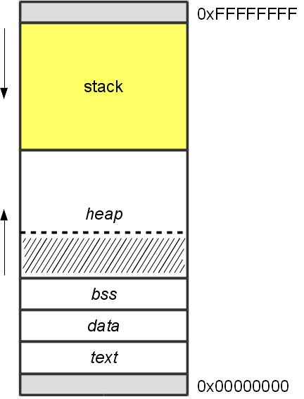
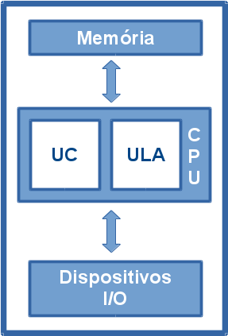
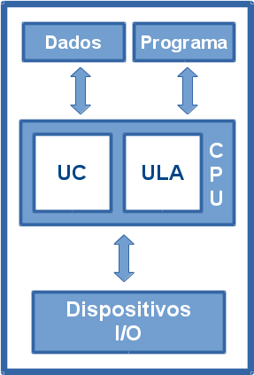

Introdução a
Exploração
de Corrupção de MemóriaQuem!?
- Maycon Maia Vitali (maycon@hacknroll.com)
- Não possuo certificações Microsoft
- Não possuo certificações Oracle (ou qualquer outro SGBD)
- Não possuo certificações Cisco
- Não sou CISSP
Quem!? (Parte II)
Agenda
- Motivação
- Escopo da apresentação
- (Introdução ao) Gerenciamento de Memória
- (Introdução a) Arquitetura de Computadores
- ABI e Calling Convention
- Corrupção de Memória (Stack-based Buffer Overflow)
- Exemplo + demonstração
- Conclusão (In the jungle)
Motivação
- Dominação Mundial
- Bounty Programs
- Pwn2Own Hacking Contest
- Black Market
Pwn2Own Hacking Contest
- IE 11 + Win 8.1 + Java: $30.000,00
- FF + Win 8.1: $ 50.000,00
- Safari + OS X: $ 65.000,00
- Google Chrome + Win 8.1: $ 100.000,00
- IE 11 + Win 8.1 + EMET: $ 150,000.00
Black Market
$ 500.000,00
Escopo da Apresentação
- Arquitetura x86(ia32)
- Sistema Operacional Linux
- Compilador GCC: (gcc -z execstack -fno-stack-protector -m32)
Introdução ao
Gerenciamento de Memória
Linux IA-32 Memory Model
- stack: Pilha do programa, cresce pra baixo;
- heap: Dados alocados dinamicamente (malloc);
- bss: Dados não inicializados;
- data: Dados inicializados;
- text: Código do programa.
Introdução a
Arquitetura de Computadores
Von Neumann vs Harvard
Von Neumann 
Harvard
Registradores da CPU (x86)
- Geral
EAX (acumulator), EBX (base), ECX (counter), EDX (data) - Segmentos
CS, DS, ES, FS, GS - Índices
ESI (source index), EDI (destination index) - Ponteiros
EBP (base pointer), ESP (stack pointer), EIP (instruction pointer)
Conjunto de Instruções (ISA)
- Movimentação: MOV* (mov, movb, movw, movl etc)
- Aritméticas: ADD, SUB, MUL, IMUL
- Saltos: J* (jmp, je, jne, jo, jnz etc)
- Pilha: PUSH, POP
- Sub-rotinas: CALL, LEAVE, RET
Introdução a
ABI e Calling Convention
Informações Importantes
- Parâmetros são empilhados (instrução push);
- Endereço de retorno é empilhado (instrução call);
- Retorno da função fica no registrador EAX;
Introdução a
Stack-based Buffer Overflow
O que
Podemos fazer com isso
- Derrubar a aplicação ou a thread (DoS - Denial of Service);
- Controlar o fluxo de execução (Alterando o endereço de retorno):
- Apontar para um código injetado na memória.
- Apontar para o próprio código da aplicaçãob> (ex: função never_execute)
Exemplo de
Demonstração da Exploração
Considerações Finais
In the jungle?
- Isso não funciona assim (DEP, ASLR, PIE, Stack Cookies so on);
- Necessário uma base (acadêmica?) profunda (SO, AOC, ED so on);
- Necessário de conhecimento da aplicação analisada.